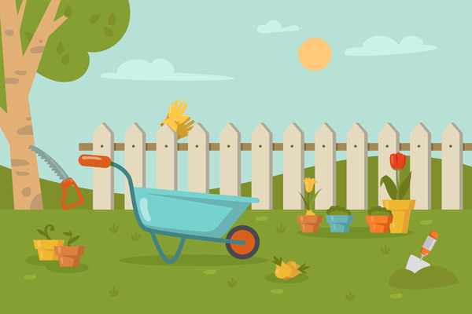

Info
While I don't have any professional programming experience, I do have some side projects that demonstrate my abilities.
Link to this websites Github
I wrote this website in html, css and a tiny bit of javascript. It is fully responsive, using css grid and flexbox and the html is as semantic as possible to ensure accessibility. (I do think the site is kind of ugly, design is not my strong suit 😆)
Link to crud app frontend
Link to crud app backend
In preparation for my bootcamp I have been making a weight tracking web app using the mern stack. It has user authentication and graphs the data without a library (just svg).
Link to game prototype
This is just a basic prototype for a game written in vanilla js.
Completed grade 12 at St Peters Lutheran College
